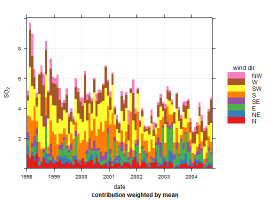

This function shows time series plots as stacked bar charts. The
different categories in the bar chart are made up from a character
or factor variable in a data frame. The function is primarily
developed to support the plotting of cluster analysis output from
polarCluster and trajCluster that
consider local and regional (back trajectory) cluster analysis
respectively. However, the function has more general use for
understanding time series data.
timeProp(mydata, pollutant = "nox", proportion = "cluster", avg.time = "day", type = "default", statistic = "mean", normalise = FALSE, cols = "Set1", date.breaks = 7, date.format = NULL, key.columns = 1, key.position = "right", key.title = proportion, auto.text = TRUE, ...)
date,
pollutant and a splitting variable proportionmydata.proportion = "cluster" if the output
from polarCluster is being analysed. If proportion
is a numeric variable it is split into 4 quantiles (by default)
by cutData. If proportion is a factor or character
variable then the categories are used directly.period = "2 month". In
addition, avg.time can equal “season”, in which
case 3-month seasonal values are calculated with spring defined
as March, April, May and so on.
Note that avg.time when used in timeProp should be
greater than the time gap in the original data. For example,
avg.time = "day" for hourly data is OK, but
avg.time = "hour" for daily data is not.type determines how the data are split i.e.
conditioned, and then plotted. The default is will produce a
single plot using the entire data. Type can be one of the
built-in types as detailed in cutData e.g. "season",
"year", "weekday" and so on. For example, type = "season"
will produce four plots --- one for each season.
It is also possible to choose type as another variable in
the data frame. If that variable is numeric, then the data will
be split into four quantiles (if possible) and labelled
accordingly. If type is an existing character or factor
variable, then those categories/levels will be used directly.
This offers great flexibility for understanding the variation of
different variables and how they depend on one another.
type must be of length one.statistic = "frequency"
will give the proportion in terms of counts.normalise = TRUE then each time
interval is scaled to 100. This is helpful to show the relative
(percentage) contribution of the proportions.RColorBrewer colours --- see the
openair openColours function for more details. For
user defined the user can supply a list of colour names
recognised by R (type colours() to see the full list). An
example would be cols = c("yellow", "green", "blue")date.breaks
up or down.timePlot generally sets the date format
sensibly there can be some situations where the user wishes to
have more control. For format types see strptime. For
example, to format the date like “Jan-2012” set
date.format = "%b-%Y".columns to be less than the number of pollutants.TRUE (default) or FALSE. If
TRUE titles and axis labels etc. will automatically try
and format pollutant names and units properly e.g. by
subscripting the `2' in NO2.timeProp
and cutData. For example, timeProp passes the
option hemisphere = "southern" on to cutData to
provide southern (rather than default northern) hemisphere
handling of type = "season". Similarly, common axis and
title labelling options (such as xlab, ylab,
main) are passed to xyplot via quickText to
handle routine formatting.In order to plot time series in this way, some sort of time
aggregation is needed, which is controlled by the option
avg.time.
The plot shows the value of pollutant on the y-axis
(averaged according to avg.time). The time intervals are
made up of bars split according to proportion. The bars
therefore show how the total value of pollutant is made up
for any time interval.
See timePlot for time series plotting,
polarCluster for cluster analysis of bivariate
polar plots and trajCluster for cluster analysis
of HYSPLIT back trajectories.
## See manual for more examples e.g. related to clustering ## monthly plot of SO2 showing the contribution by wind sector timeProp(mydata, pollutant = "so2", avg.time = "month", proportion = "wd")Warning message: 219 missing wind direction line(s) removed